#1 · 1303 南亞2026-09-17 09:00 → 09-18 13:30
+1.28%
entry 235.00 stop 220.50 (−14.50) target 264.00 exit 238.00 open +3.00 破底 220.50 @ 09-14 09:00 站回 09-17 09:00 MA5 227.70 / MA10 226.00 / MA20 229.35 fwd +1d +0.21% +3d — +5d —
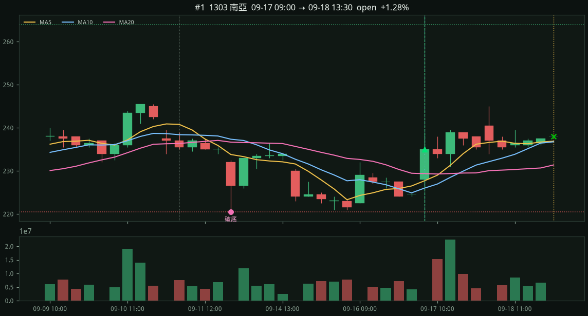
9/17–9/18 · 股價<1000 · 基準日 20260918 · 100 檔 · 成交額末名約 17.4 億
跌破 MA20 後待 4～36 根（中間最多 2 根假站上），深度 ≥ 1.8%，最低點為近 16 根新低，再站回 MA20。
破底後 36 根內第一根收盤 > MA5 / MA10 / MA20 進場。
回測出場：停在破底低、2R、或 20 根時間停。加總％是各筆報酬相加，不是組合複利。
漏斗：跌破 448 → 成波 181 → 進場 181
· 太短 153 · 不夠深 10 · 非破底 87
· 假站過多 0 · 逾時 17 · 沒站上均線 0
· 進場價過高 1
出場：2R 0 · 停損 0 · 時間 0 · 未平 20
· 收盤後 +1d -0.12% · +3d — · +5d —
entry 235.00 stop 220.50 (−14.50) target 264.00 exit 238.00 open +3.00 破底 220.50 @ 09-14 09:00 站回 09-17 09:00 MA5 227.70 / MA10 226.00 / MA20 229.35 fwd +1d +0.21% +3d — +5d —

entry 621.00 stop 593.00 (−28.00) target 677.00 exit 638.00 open +17.00 破底 593.00 @ 09-15 09:00 站回 09-17 09:00 MA5 608.60 / MA10 602.80 / MA20 607.70 fwd +1d -1.13% +3d — +5d —
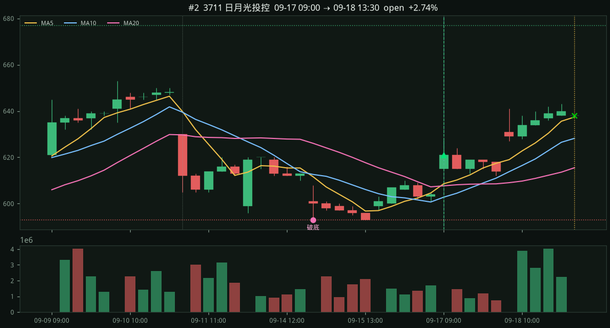
entry 545.00 stop 520.00 (−25.00) target 595.00 exit 550.00 open +5.00 破底 520.00 @ 09-14 09:00 站回 09-17 09:00 MA5 536.20 / MA10 538.20 / MA20 541.40 fwd +1d -2.94% +3d — +5d —
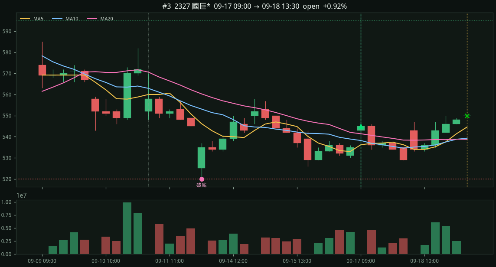
entry 252.50 stop 243.50 (−9.00) target 270.50 exit 250.50 open -2.00 破底 243.50 @ 09-14 09:00 站回 09-17 09:00 MA5 248.30 / MA10 247.65 / MA20 247.93 fwd +1d -0.79% +3d — +5d —
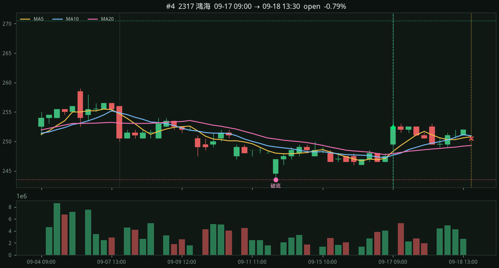
entry 245.00 stop 220.00 (−25.00) target 295.00 exit 268.50 open +23.50 破底 220.00 @ 09-16 13:00 站回 09-17 09:00 MA5 227.10 / MA10 224.90 / MA20 227.15 fwd +1d -0.61% +3d — +5d —
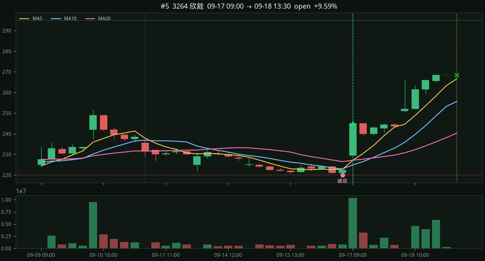
entry 437.00 stop 407.00 (−30.00) target 497.00 exit 444.50 open +7.50 破底 407.00 @ 09-15 13:00 站回 09-17 09:00 MA5 423.30 / MA10 420.15 / MA20 433.48 fwd +1d -2.17% +3d — +5d —
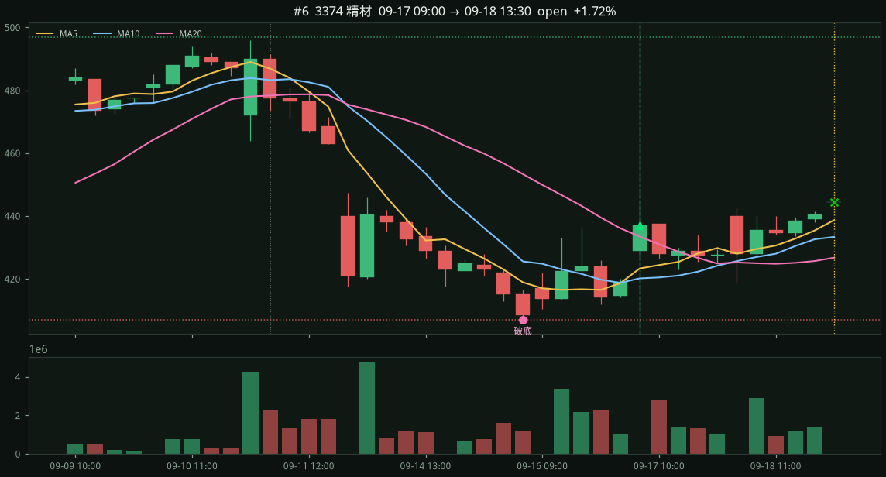
entry 306.50 stop 291.00 (−15.50) target 337.50 exit 309.50 open +3.00 破底 291.00 @ 09-14 09:00 站回 09-17 09:00 MA5 303.40 / MA10 302.90 / MA20 305.05 fwd +1d -3.59% +3d — +5d —
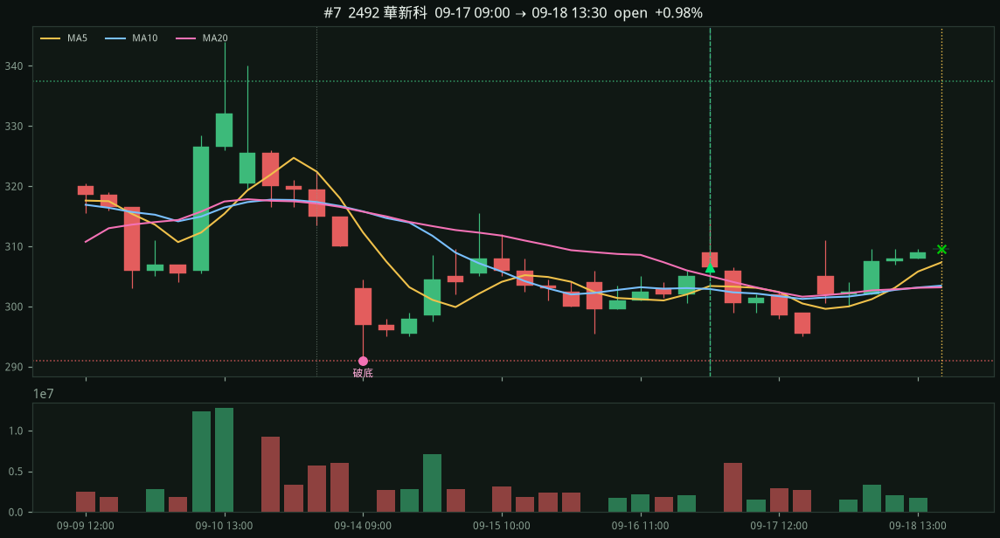
entry 439.00 stop 417.00 (−22.00) target 483.00 exit 474.00 open +35.00 破底 417.00 @ 09-16 09:00 站回 09-17 09:00 MA5 431.10 / MA10 429.20 / MA20 438.25 fwd +1d -2.05% +3d — +5d —
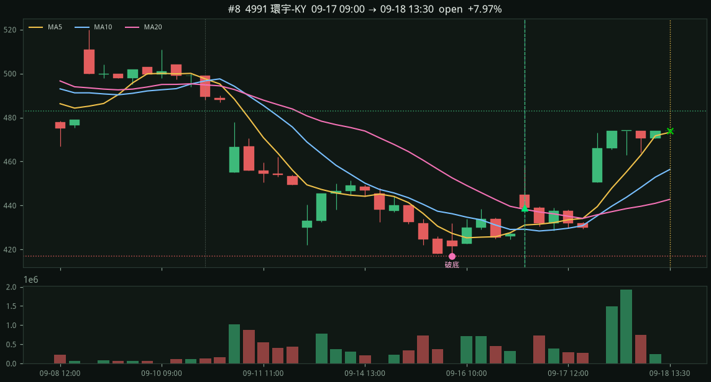
entry 63.60 stop 61.20 (−2.40) target 68.40 exit 65.00 open +1.40 破底 61.20 @ 09-15 09:00 站回 09-17 09:00 MA5 62.60 / MA10 62.34 / MA20 62.83 fwd +1d +1.73% +3d — +5d —
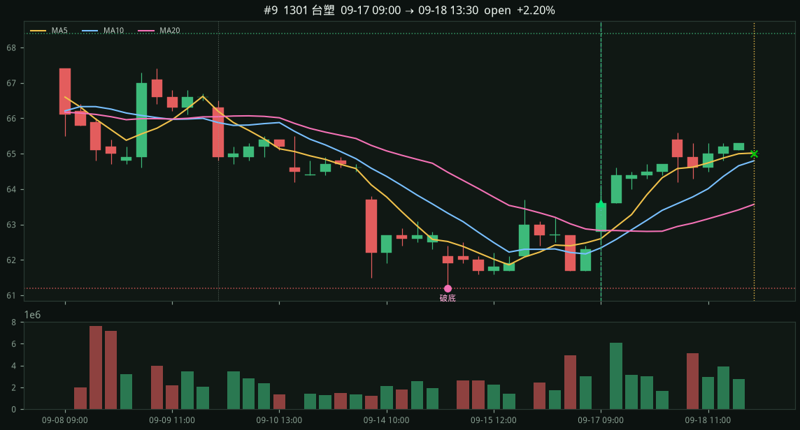
entry 120.00 stop 111.00 (−9.00) target 138.00 exit 119.50 open -0.50 破底 111.00 @ 09-17 11:00 站回 09-18 09:00 MA5 113.60 / MA10 115.70 / MA20 116.88 fwd +1d -0.42% +3d — +5d —
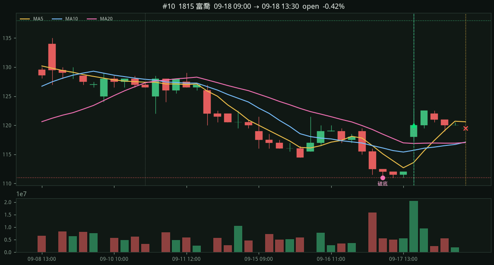
entry 302.00 stop 295.00 (−7.00) target 316.00 exit 309.50 open +7.50 破底 295.00 @ 09-17 13:00 站回 09-18 09:00 MA5 299.60 / MA10 301.50 / MA20 301.88 fwd +1d +2.48% +3d — +5d —
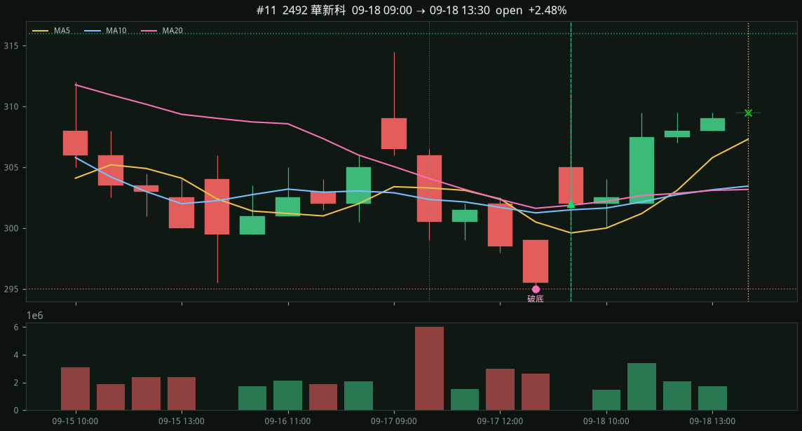
entry 723.00 stop 695.00 (−28.00) target 779.00 exit 733.00 open +10.00 破底 695.00 @ 09-14 09:00 站回 09-17 09:00 MA5 707.80 / MA10 710.40 / MA20 710.95 fwd +1d +1.38% +3d — +5d —
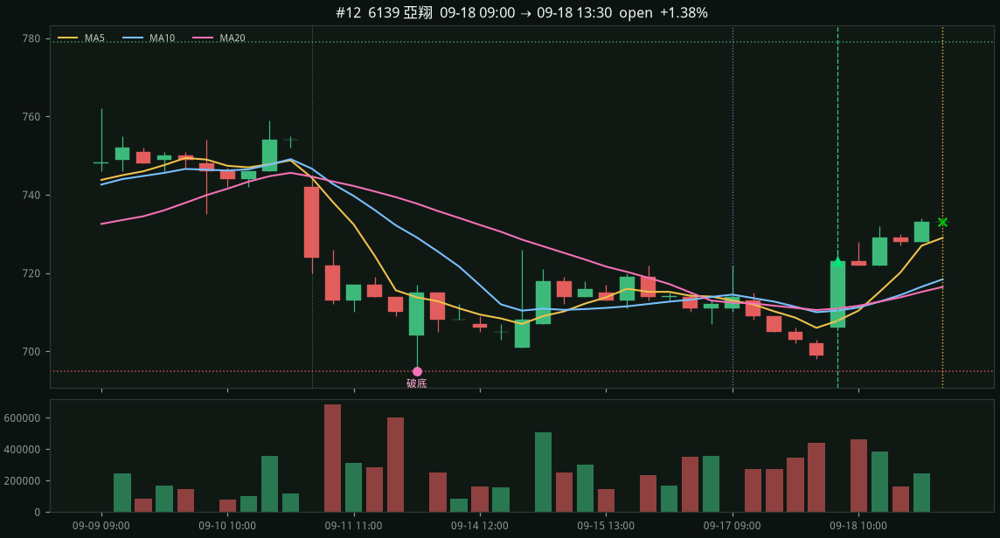
entry 955.00 stop 887.00 (−68.00) target 1091.00 exit 968.00 open +13.00 破底 887.00 @ 09-15 13:00 站回 09-18 09:00 MA5 930.00 / MA10 934.40 / MA20 935.65 fwd +1d +1.36% +3d — +5d —
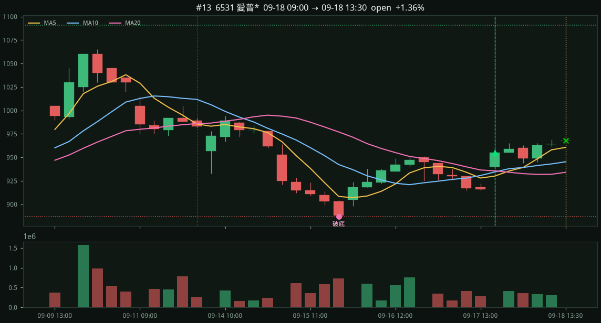
entry 69.60 stop 68.20 (−1.40) target 72.40 exit 70.00 open +0.40 破底 68.20 @ 09-15 12:00 站回 09-18 11:00 MA5 69.04 / MA10 69.13 / MA20 69.11 fwd +1d +0.57% +3d — +5d —
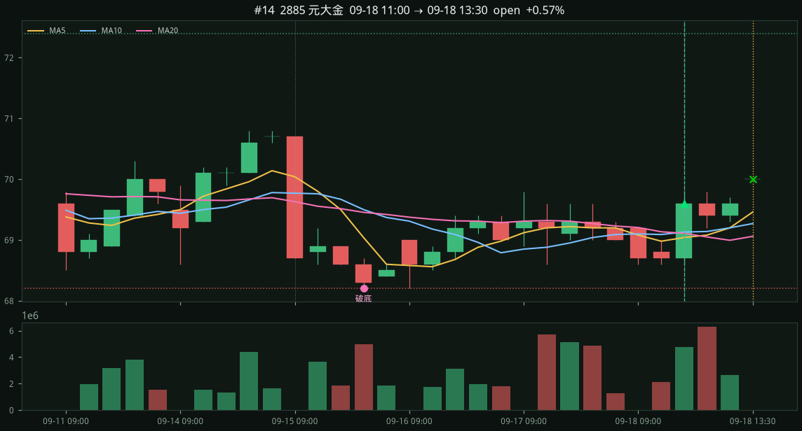
entry 269.00 stop 256.50 (−12.50) target 294.00 exit 269.50 open +0.50 破底 256.50 @ 09-17 11:00 站回 09-18 12:00 MA5 263.20 / MA10 263.70 / MA20 268.70 fwd +1d +0.19% +3d — +5d —
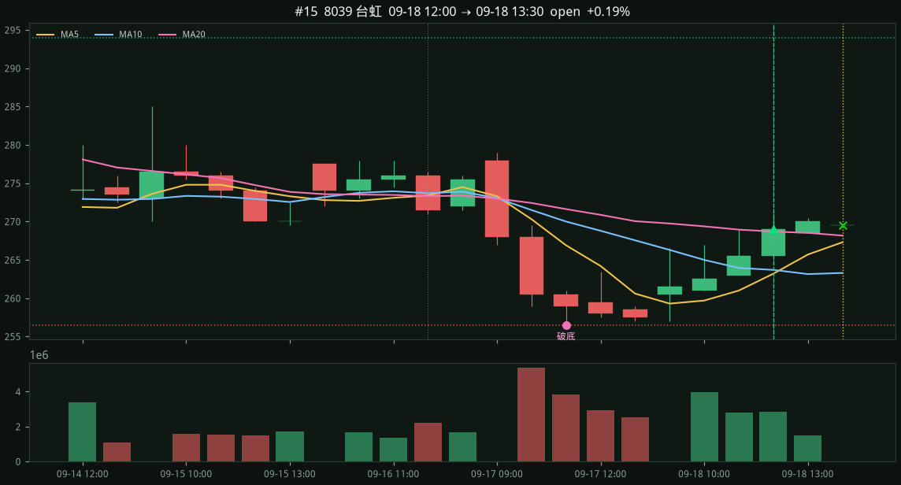
entry 495.00 stop 477.50 (−17.50) target 530.00 exit 499.50 open +4.50 破底 477.50 @ 09-17 13:00 站回 09-18 12:00 MA5 491.60 / MA10 491.55 / MA20 493.98 fwd +1d +0.91% +3d — +5d —
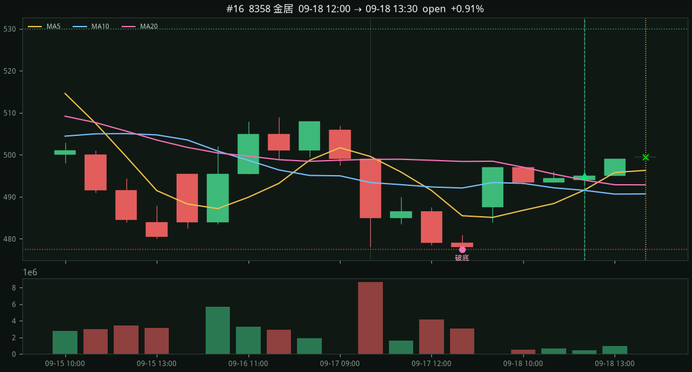
entry 122.50 stop 115.00 (−7.50) target 137.50 exit 126.00 open +3.50 破底 115.00 @ 09-17 12:00 站回 09-18 12:00 MA5 119.40 / MA10 120.15 / MA20 121.33 fwd +1d +2.86% +3d — +5d —
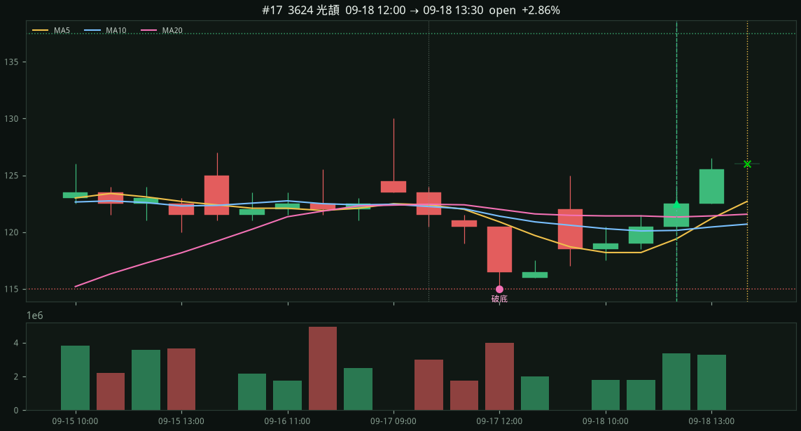
entry 44.40 stop 42.60 (−1.80) target 48.00 exit 44.40 open +0.00 破底 42.60 @ 09-18 10:00 站回 09-18 13:30 MA5 43.34 / MA10 43.73 / MA20 43.76 fwd +1d — +3d — +5d —
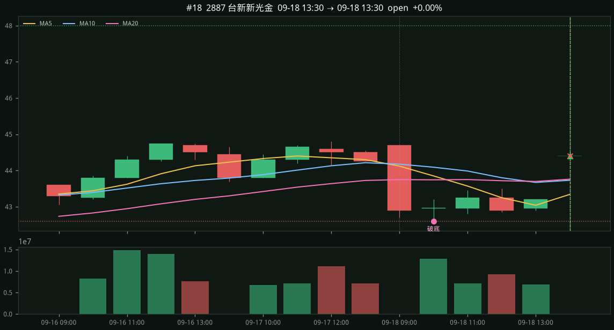
entry 46.40 stop 45.00 (−1.40) target 49.20 exit 46.40 open +0.00 破底 45.00 @ 09-18 10:00 站回 09-18 13:30 MA5 45.91 / MA10 46.28 / MA20 46.14 fwd +1d — +3d — +5d —
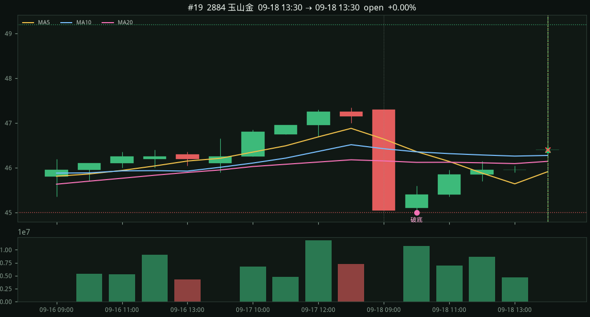
entry 51.10 stop 50.10 (−1.00) target 53.10 exit 51.10 open +0.00 破底 50.10 @ 09-18 10:00 站回 09-18 13:30 MA5 50.78 / MA10 51.08 / MA20 51.04 fwd +1d — +3d — +5d —
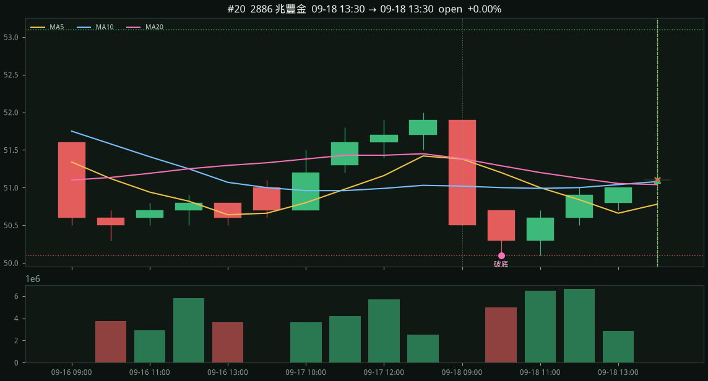